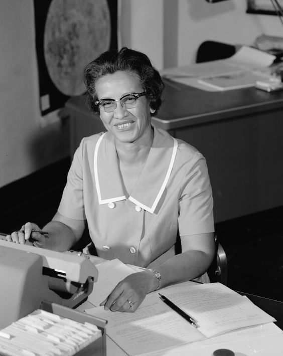

J K Rowling

J K Rowling is known as such because her publisher didn't think that boys would want to buy a book written by a woman. Twelve publishers rejected her manuscript. She is now the UK's best-selling living author.
Thomas Jefferson

Thomas Jefferson was the first Repulican president of the USA, and was responsible for the purchase of Louisiana from the French.
Katherine Johnson
Katherine Johnson worked as a computer at the precursor to NASA. She calculated the trajectory for the flight of the first American in space.